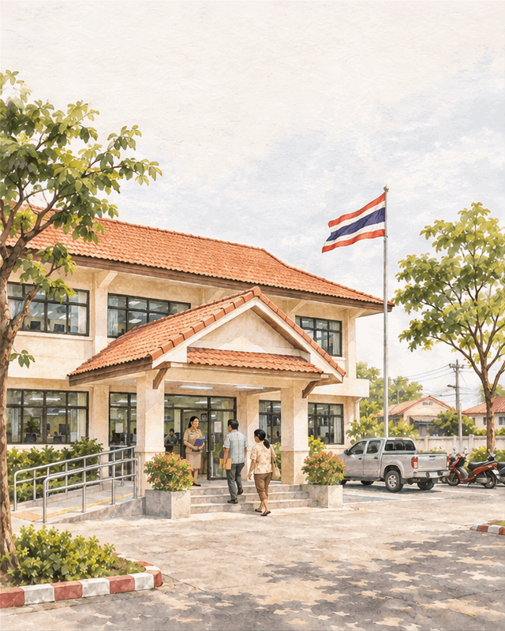

1A · GIF ที่สร้างโดยตรงผ่าน OpenRouter
GPT Image 2.6 Sunburst · 640 × 800 · 16 เฟรม · วนรอบละ 1.28 วินาที · ค่าบริการ $0.152605

ภาพนิ่ง 1A ที่เลือก

ภาพต้นฉบับความละเอียดเต็มที่ส่งเป็น reference
GIF ที่ API ส่งกลับ

ไฟล์ดิบจากผู้ให้บริการ ไม่มีการย่อ บิดภาพ หรือสร้างเฟรมแทรกในเครื่อง
Prompt และค่าที่ส่ง · ผลตรวจไฟล์ · ข้อมูลค่าใช้บริการจาก API